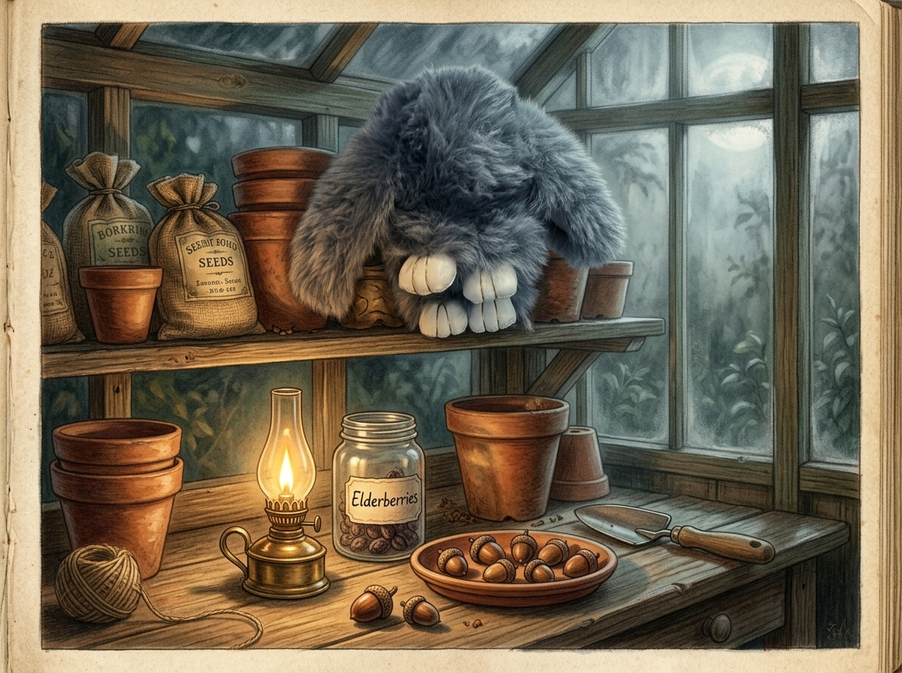

The Case of the Bramblewood Berry Ledger
Being a Pleasant & Instructive Story of Special Agent Floppy and the Mysteries of the Ratio Table
Chapter I — The Lavender-Scented Lead
The autumn fog hung thick over Bramblewood Manor, wrapping the grand stone chimneys in a damp, grey wool coat that matched Special Agent Floppy’s own shaggy attire. Inside the dark, cavernous larder, the air smelled of dried lavender, cold flagstones, and the sharp, sweet tang of preserved damsons.
Floppy sat perfectly still behind a giant stoneware flour crock. To any passing housemaid, she was merely an ordinary, somewhat oversized plush rabbit—a bundle of thick, long-pile smoky slate-grey faux fur with heavy ears draping sleepily down her sides. Her small, glossy dark bead eyes, recessed deep within her woolly facial fluff, remained entirely motionless. But beneath that soft, deceptive exterior, Floppy’s mind was whirring with the cold, hard steel of deductive logic.
Her white vinyl paws, detailed with fine, gold-stitched grooves, were tucked quietly beneath her lightweight cotton-stuffed tummy. She was on a stakeout.
For three nights, the winter stores of Bramblewood had been systematically altered. The high-value dried elderberries, carefully harvested by the head gardener for the master's winter cordials, were vanishing from their blue-and-white porcelain jars. In their place, neat piles of polished brown oak acorns appeared. It was the unmistakable signature of the Acorn Syndicate—that shadowy, unseen band of woodland operators whose tiny, muddy pawprints Floppy had tracked across the potting shed floor only yesterday.
They never took everything at once; that would be crude, and the Syndicate was nothing if not orderly. They left behind a precise, mathematically consistent exchange. But what was their formula?
With a soft, fibrous rustle, Floppy shifted her weight. She reached into her shaggy chest fur with a soft plush paw and pulled out her magnifying reading lens and a small pocket slate. A faint scratching sound from the shelf above caught her attention. A dry oak leaf drifted downward, landing softly on the flagstones.
The Syndicate had just completed another transaction.
Floppy waited until the silence of the larder returned, save for the steady, reassuring tick of the grandfather clock in the hall. Then, with the practiced stealth of a veteran investigator, she climbed the wooden pantry shelves, her lightweight cotton body making not a single sound against the pine ledges.
Chapter II — The Secrets of the Sorting Tray
Observation is the first duty of the detective, and Floppy was nothing if not observant. On the middle shelf, next to the half-empty jar of elderberries, sat a long, shallow wooden sorting tray divided into five distinct, rectangular compartments.
"A physical manifest," Floppy murmured to herself, her deadpan internal voice echoing like a narrator in a smoky city office. "They are logging their transactions in wood and seed."
She peered through her magnifying lens. The first compartment contained exactly 3 dried elderberries and 5 glossy brown acorns.
"The baseline," she noted, jotting the numbers onto her slate. "For every 3 elderberries they extract, they deposit 5 acorns. A comparison of two quantities by division. A ratio of 3 to 5."
She moved her lens to the second compartment. Here, there were 6 elderberries, but the corresponding section for acorns was empty, save for a few faint, circular dust rings where the nuts had recently rested.
"A missing value," Floppy whispered. "A case of table completion. They have taken their cut, but the payment has not yet been deposited."
In the third compartment, the situation was reversed. A small heap of 15 acorns sat undisturbed, but the space beside them—where the elderberries should be—was entirely bare.
The fourth compartment was fully intact: 12 dried elderberries lay side-by-side with 20 brown acorns.
The fifth and final compartment contained 15 elderberries, but the acorn side was empty once more.
Floppy sat back on her haunches, her long, heavy ears framing her face like a judge’s wig. She looked at the wooden tray. It was, in essence, a physical ratio table carved from cedar wood. Each compartment represented a pair of values that must maintain the exact same relationship as the first.
[ Compartment 1 ] → 3 Elderberries : 5 Acorns (3, 5) [ Compartment 2 ] → 6 Elderberries : ? Acorns (6, ?) [ Compartment 3 ] → ? Elderberries : 15 Acorns (?, 15) [ Compartment 4 ] → 12 Elderberries : 20 Acorns (12, 20) [ Compartment 5 ] → 15 Elderberries : ? Acorns (15, ?)
"To predict their next move," Floppy reasoned, her dark bead eyes gleaming in the pantry gloom, "I must decode the patterns of this table. If I can complete these missing coordinates, I will know precisely how many acorns they intend to bring to the final drop-off in the potting shed tonight."
Chapter III — Additive and Multiplicative Clues
To solve the mystery, Floppy laid her pocket slate flat on the shelf and began her forensic calculations. She drew a neat grid, labeling the elderberries as the variable x and the acorns as the variable y. Each compartment represented an ordered pair, written as (x, y).
"There are two primary methods to crack a ratio table," Floppy muttered, tapping her chalk against her chin. "The additive pattern and the multiplicative pattern. A master sleuth uses both to verify her findings."
First, she examined the additive pattern. She looked at the rows of her table.
"In the elderberry row, x," she observed, "the quantities we know are 3, 6, [missing], 12, and 15. The values increase by adding 3 each time. This is a constant addition of the starting term."
3 −−−(+3)−−> 6 −−−(+3)−−> [9] −−−(+3)−−> 12 −−−(+3)−−> 15
"If the relationship is proportional," Floppy deduced, "then the acorn row, y, must also change by a constant additive pattern. The starting term is 5. Therefore, we must add 5 to each subsequent step."
She wrote out the sequence for y:
5 −−−(+5)−−> [10] −−−(+5)−−> 15 −−−(+5)−−> 20 −−−(+5)−−> [25]
To double-check her work, she turned to the more powerful multiplicative pattern. "Addition is reliable, but multiplication is the true bedrock of proportion," she whispered. "An equivalent ratio is found by multiplying or dividing both terms of the basic ratio by the same non-zero number."
She analyzed the second compartment, where x = 6. "To get from 3 elderberries to 6 elderberries, we multiply by 2," she calculated.
Since 3 × 2 = 6, she must also multiply the basic acorn value of 5 by 2: 5 × 2 = 10.
"The missing value for the second compartment is indeed 10," Floppy said, her chalk flying across the slate. "The completed coordinate is (6, 10)."
Next, she turned her attention to the third compartment, where the acorn count, y, was known to be 15. "To get from our basic acorn count of 5 to 15, we must multiply by 3," she wrote.
Since 5 × 3 = 15, she must apply the same multiplier to the elderberry count: 3 × 3 = 9.
"The missing elderberry count is 9," Floppy noted. "The coordinate is (9, 15). The additive pattern predicted 9, and the multiplicative pattern confirms it absolutely."
Finally, she calculated the fifth compartment, where the elderberry count, x, was 15. "Since 3 × 5 = 15, we must multiply the basic acorn count of 5 by 5," she reasoned.
5 × 5 = 25.
"The final coordinate is (15, 25)."
With a flourish of her white vinyl paw, she filled in the empty spaces on her slate, completing the ledger.
- Ratio Table: A structured grid showing equivalent ratios that maintain a constant proportional relationship between two quantities.
- Additive Pattern: Increasing or decreasing the rows of a ratio table by repeatedly adding the original terms (adding 3 to x, adding 5 to y).
- Multiplicative Pattern: Finding equivalent ratios by multiplying both terms of the basic ratio by the same scale factor (x × c and y × c).
- Table Completion: The process of solving for missing values in a ratio table using established patterns.
- Finding Compartment 2 (x = 6):
Scale Factor = 6 ÷ 3 = 2
y = 5 × 2 = 10
Coordinate: (6, 10) - Finding Compartment 3 (y = 15):
Scale Factor = 15 ÷ 5 = 3
x = 3 × 3 = 9
Coordinate: (9, 15) - Finding Compartment 5 (x = 15):
Scale Factor = 15 ÷ 3 = 5
y = 5 × 5 = 25
Coordinate: (15, 25)
| Compartment | Elderberries (x) | Acorns (y) | Ordered Pair (x, y) |
|---|---|---|---|
| Compartment 1 (Baseline) | 3 | 5 | (3, 5) |
| Compartment 2 | 6 | 10 | (6, 10) |
| Compartment 3 | 9 | 15 | (9, 15) |
| Compartment 4 | 12 | 20 | (12, 20) |
| Compartment 5 | 15 | 25 | (15, 25) |
Chapter IV — The Final Intercept at the Potting Shed
Armed with the completed ledger, Floppy knew exactly what she had to do. The fifth compartment represented the Syndicate’s final transaction of the evening: an exchange of 15 elderberries for 25 acorns. According to her map of the estate, the drop-off was scheduled to occur in the old potting shed at the edge of the kitchen garden, where the fog was currently thickest.
Slipping her slate into her thick faux fur, Floppy dropped silently from the pantry shelf. She navigated the cold scullery floor, squeezed through the wooden cat-flap with a gentle squeeze of her lightweight cotton middle, and ventured into the misty night.
The potting shed was a quiet sanctuary of terracotta pots, damp peat, and rusty trowels. Floppy positioned herself on a high shelf, blending perfectly with a row of dry, grey-felt bulb bags. Her long ears draped over a wooden seed box, hiding her face, while her glossy eyes stared unblinking at the workbench below.

At exactly midnight, a soft rustling sounded from the ivy-covered window. A tiny, dark silhouette appeared on the sill, holding a small burlap sack. It was a member of the Syndicate—though in the thick fog, it was nothing more than a fleeting shadow, a twitch of whiskers, and a quick, agile tail.
The figure scurried down a hanging piece of garden twine to the workbench. There, sitting on the table, was a small, empty glass jar labeled "Elderberries - 15 Count."
The shadow opened its burlap sack and began to count out the payment. One by one, the smooth, polished acorns clinked into a small terracotta dish.
Floppy watched, counting silently in her head. "Five... ten... fifteen... twenty..."
The shadow paused, reaching into the sack for the final handful.
"Twenty-one, twenty-two, twenty-three, twenty-four, twenty-five."
Exactly twenty-five acorns. The ratio was complete. The scale factor of 5 had been maintained, and the mathematical balance of Bramblewood Manor was preserved.
The tiny shadow turned, grabbed the jar of 15 elderberries, and vanished back up the garden twine as quickly as a gust of autumn wind.
Floppy did not give chase. A detective knows when a case is resolved. She climbed down from her hiding spot, her soft white-and-gold paws tapping lightly on the dusty workbench. She picked up one of the left-behind acorns, turning its smooth, cool surface over in her paw.
She had solved the riddle of the ledger. The winter cordials would be shorter by a few berries, but the pantry records were perfectly balanced, and the secret of the ratio table was hers forever. With a quiet, deadpan sigh of satisfaction, Special Agent Floppy tucked the acorn into her fur and set off through the damp grass, heading back toward the warm, dry hearth of the manor house.